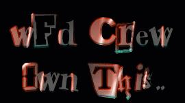
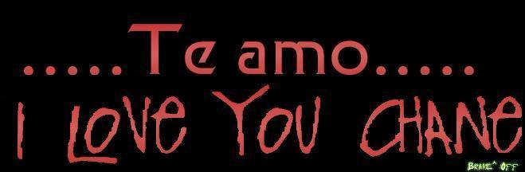

Thiz p00r Security b0x Haz BeEn 0wned By:
WFD Crew Strikez Again.
Admn, Thanks For Hosting The True of an Injustice.. NOTHING was Harmed
If you need assistance or Any Question contact:
elbarto224@usa.net
The issue (the reason we are defacing):
No issue in the conflict between Israel and the Palestinians is more emotional than Jerusalem. A big reason: because Judaism's holiest site and Islam's third-holiest site are located within the city's boundaries. Half of the city was under Jordanian control until the 1967 war, when it was reunified after Israel drove Jordan out of the West Bank.
The Palestinian position (whom
we support):
The Palestinians have always regarded Jerusalem, or Al Quds, as they call it, as the capital of their future state. They want to restore a divide between Israeli and Arab sections, with the religious rights of all guaranteed.
The Israeli position (whom we
are against):
Israel insists that Jerusalem is its "eternal" capital (although most countries maintain their embassies in Tel Aviv) and that the city will remain undivided under its control, with rights of religious access guaranteed to all.

Kashmir:
Suspect in Red Fort attack shot dead
NEW DELHI, Dec 26: The New Delhi police said on Tuesday they had
shot dead a Muslim militant suspected of being involved in the
assault on the Red Fort.
"An encounter took place early this morning ... in which one
militant was killed and another nabbed in the capital's south
district," an official of the Delhi police
counter-insurgency cell told AFP.
The shootout took place at 5:40am (0010 GMT) during a raid on a
residential area in south Delhi, the official said, adding that
police had recovered an AK-47 rifle, two grenades and some
ammunition.
The dead militant was identified as Abu Shawal and his captured
comrade as Ashaf Ali, who reportedly gave police the names of six
more people involved in the Red Fort attack on Friday night. Both
men were believed to be Pakistani nationals.
Lashker-i-Taiba - a militant group operating in Occupied Kashmir
- claimed responsibility for Friday's attack, in which three
people, including two army personnel were killed.
The Red Fort houses an army garrison and interrogation center. A
high-level joint police and army probe has been ordered into the
security lapse that allowed the armed militants to approach
undetected. More than 1,000 policemen, soldiers and military
intelligence officials on Tuesday were still carrying out
house-to-house searches in a two-kilometer radius from the fort.
Meanwhile, the Laskher-i-Taiba issued a press release on Tuesday,
threatening a suicide attack against the offices of Indian Prime
Minister Atal Behari Vajpayee. "Our Mujahideen will storm
Vajpayee's office and carry out a fidayeen (suicide) attack
there," the Lashker statement said. "If our cadres can
force an entry into Delhi's Red Fort, it will not be an uphill
task to barge into Mr Vajpayees's office."
Lashkar was among the first militant groups to reject the
unilateral Indian army ceasefire in Kashmir which was ordered by
Prime Minister Vajpayee and came into force at midnight Nov 27.
Last week, Vajpayee extended the cease-fire for another four
weeks.
"The government should leave the politics of cease-fire and
withdraw its troops from Kashmir," the Lashker release said.
"If India fails to withdraw its troops we will intensify our
fidayeen attacks within India and force it to pull out its
troops."
Observers say the recent attacks on high-profile targets were
aimed at delivering a clear message that hard-line militant
outfits will not be sidelined by the cease-fire process.
THREAT TO VAJPAYEE: The Lashker-i-Taiba threatened on Tuesday a
suicide attack against the offices of Indian Prime Minister Atal
Behari Vajpayee in New Delhi. "Our mujahideen, Allah
willing, will storm Vajpayee's office and carry out a Fidayeen
(suicide) attack there," the Lashker said in a one-page Urdu
press release. "If our cadres can force an entry into
Delhi's Red Fort, it will not be an uphill task to barge into Mr
Vajpayee's office," the statement said.
Lashker was among the first groups to reject the unilateral
Indian army cease-fire in occupied Kashmir.
A Message to Israel:
Are we cyberterrorists simply because we seek to bring light to the millions that you have emerged in darkness? For well over 4 decades, your fascist, racist, Zionist regime has been gradually committing genocide against the Palestinian people, denying them not only their righful land you stripped away from them, but also the basic human rights of society. The world is against you Israel, but the good-willed, good-hearted American people you have deceived still stand loyally on your side. By giving the innocent American people the image that your nation is forthright and guileless, you have successfully been able to violate the sovereignty of other nations, steal a whole people of their land, portray freedom fighters such as Hizballah as “terrorists”, and gradually dispossess and subjugate a whole people. But your transient glory is as its peak. Now the tables will turn… Your heartless hypocrisy will be elucidated…Your inhumanity will be exposed…We will bring hope to the millions you've thrown in despair...We swear by God that we will bring truth to a world enveloped in falsehood...Until our blood too falls with the martyrs of Al-Aqsa…and the martyrs of Chechnya, of Kosova…of Bosnia…and of Kashmir…
Greets:
|^CyBeRpUnK^|
G-force Pakistan
Fighter For Islam
Prime Suspectz
Hackweiser
Philer
Undermex
DjVenoM
MiBXXX
DarcAngel
Techno
DreAmeR
PingNicK
Ariot
PMX-ELITE Chinge Mucho a su Madre Bola de lamers PENDEJETES
CHinge a su Madre especialmente:
TENEX
&
RAZOR
Los dos lamers mas Incultos e Ignorantes de la Puta RED-LETRINA
...........................
Tambien Chinge a su MADRE TRansito del Municipal ( Mexico ) , Son un bola de IDIOTAS Buenos para nada
00========D ~ ~ ~ ~ ~
OhHh My God.. Do You Think This words are Appropiate For a " Master Elite Hacker" ? take a look:
"We want to use them positively so that they can create adequate firewalls so that nobody can hack our country's Web sites,"
"If you want to catch hold of a hacker, you need the brains of a hacker,"
"Hacking, spreading viruses are much bigger criminal offenses in cyber terrorism than pornography,"
OHhH, My god. im Criying, They are so Leet, YOU FUCKING India lamers.. !!!! Youre, so, so, lamers
i will FUCK-UP Youre securityand i will be youre Nightmare, cause you lame Script Kiddies r a Piece of shit
so, You Think Youre leet, TRY TO HACK ME MOTHA FUCKERS.. IM 14 Years old and i Think Im Better Than YOU!
http://www.cnn.com/2001/TECH/computing/01/03/india.crime.reut/index.html
FUCK India... FUCK indians "hackers" FUCK YOUR SECURITY L0oSers
"They are brilliant. They told me that within five minutes they can hack the (Indian) defense ministry Web site
BAh.. Why dont you try to hack Your Mom ass?..!.. FUCK ALL Security Administrators at India.. ! You and Your Work
Sucks..! Try to hack 127.0.0.1 Fuckin Leets
#EoF#
PS.
